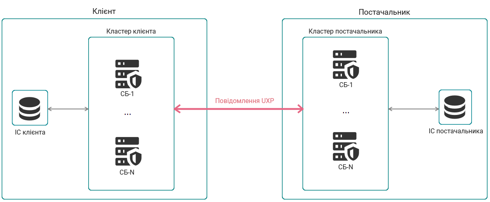
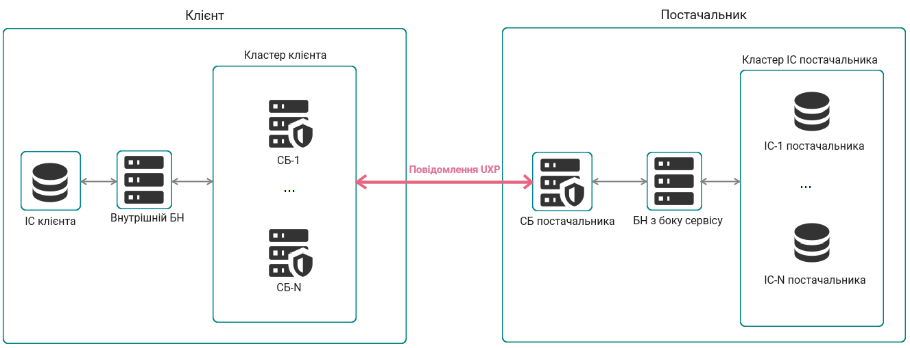

1. Вступ
1.1. Цільова аудиторія
Цільовою аудиторією даного посібника є системні адміністратори, відповідальні за реалізацію Високої доступності та Балансування навантаження для програмного забезпечення Сервер безпеки UXP.
Документ призначено для читачів з гарними знаннями у сфері керування серверами Linux, комп’ютерних мереж, а також принципів функціонування технології UXP.
Більшість описаних у цьому посібнику дій передбачають, що читач має доступ до командного рядка в інтерфейсі Серверу безпеки.
1.2. Висока доступність та Балансування навантаження для Серверу безпеки UXP
Висока доступність (далі- HA) для серверів безпеки UXP передбачає, що кілька серверів безпеки можуть обробляти повідомлення UXP для однієї служби UXP. Фактично, це означає, що HA забезпечується кластером серверів безпеки, кожен з яких має однакову конфігурацію служби.
Кластер серверів безпеки також може комплектуватися стороннім балансувальником навантаження (далі - БН), щоб також покращити швидкодію системи (див. розділ Балансувальники навантаження).
1.3. Використані джерела
-
[Apache] Проєкт Apache HTTP-сервер, https://httpd.apache.org/
-
[HAProxy] Балансувальник навантаження TCP/HTTP HAProxy, http://www.haproxy.org/
-
[JSON] Вступ у JSON, http://json.org/
-
[Nginx] Балансувальник навантаження Nginx, https://www.nginx.com/
-
[UA-UXP-IG-GRAYLOG] Cybernetica AS. Graylog для серверів UXP: Посібник з встановлення та налаштування. Ідентифікатор документа: UA-UXP-IG-GRAYLOG
-
[UA-UXP-IG-SS] Cybernetica AS. Сервер безпеки UXP: Посібник з встановлення та налаштування. Ідентифікатор документа: UA-UXP-IG-SS
-
[UA-UXP-UG-PMA] Cybernetica AS. Сервер безпеки UXP: Налаштування моніторингу серверу безпеки. Ідентифікатор документа: UA-UXP-UG-PMA
-
[UA-UXP-UG-SS] Cybernetica AS. Сервер безпеки UXP: Посібник користувача. Ідентифікатор документа: UA-UXP-UG-SS
2. Кластер серверів безпеки для високої доступності
Щоб забезпечити високу доступність сервісу UXP, можна налаштувати кластер серверів безпеки.
Для задач UXP формується кластер з двох чи більше серверів безпеки (називаються вузлами у контексті кластеру), які здатні опрацьовувати запити для однієї служби UXP. Це означає, що усі вузли кластеру повинні мати однакову конфігурацію.
Кластер можна створити на боці клієнта сервісу або на боці постачальника сервісу. Більше подробиць щодо необхідних налаштувань можна знайти у розділах client cluster та provider cluster.

2.1. Кластер серверів безпеки на боці клієнта
Кластер серверів безпеки на боці клієнта забезпечує високу доступність зв’язку між інформаційною системою (далі - ІС) клієнта сервісу та серверами безпеки клієнта. При такому сценарії певна логіка має бути реалізована з боку ІС клієнта, щоб ІС могла обирати на який саме сервер безпеки буде надсилатися кожний із запитів.
Це означає, що кожен вузол кластеру повинен мати:
-
однакового зареєстрованого клієнта(ів);
-
актуальну глобальну конфігурацію;
-
чинний ключ та сертифікат автентифікації;
-
чинний ключ та сертифікат підпису для кожного клієнта;
-
у випадку використання HTTPS з’єднання між сервером безпеки та інформаційною системою, також чинний внутрішній TLS ключ та сертифікат для серверу безпеки, і чинний внутрішній TLS ключ та сертифікат для кожної інформаційної системи.
Більше подробиць щодо вказаних вище сутностей можна знайти у Посібнику користувача Серверу безпеки UXP [UA-UXP-UG-SS].
Клієнтський кластер серверів безпеки сумісний з сторонніми балансувальниками навантаження (див. розділ Внутрішній балансувальник навантаження).
2.2. Кластер серверів безпеки на боці постачальника
Кластер серверів безпеки на боці постачальника забезпечує високу доступність зв’язку між сервером безпеки клієнта та серверами безпеки постачальника.
Це означає, що кожен вузол кластеру повинен мати:
-
однакового зареєстрованого клієнта(ів);
-
однакові зареєстровані сервіси (з однаковим учасником, підсистемою та кодом сервісу);
-
однакові права доступу до сервісів;
-
актуальну глобальну конфігурацію;
-
чинний ключ та сертифікат автентифікації;
-
чинний ключ та сертифікат підпису для кожного клієнта;
-
у випадку використання HTTPS з’єднання, також чинний внутрішній TLS ключ та сертифікат, і чинний внутрішній TLS ключ та сертифікат для кожної інформаційної системи.
Більше подробиць щодо вказаних вище сутностей можна знайти у Посібнику користувача Серверу безпеки UXP [UA-UXP-UG-SS].
| Для додавання вузла у кластер він має бути ввімкненим - вбудованого механізму автоматичного ввімкнення нових вузлів для заміни втрачених немає. |
2.2.1. Вибір цільового вузла кластеру
Починаючи з версії 1.20, для передачі запитів до кластеру постачальника сервісу, сервери безпеки стандартно використовують стратегію round-robin, на відміну від попередньої практики з fastest-connected.
Використовуючи стратегію round-robin, сервер безпеки клієнта циклічно розподіляє запити між вузлами кластеру постачальника сервісу, які відповідають на запит щодо встановлення зв’язку по Протоколу управління передачею (TCP).
Стратегія round-robin балансує навантаження між різними вузлами, тобто не надає перевагу одному вузлу, як у стратегії fastest-connected.
Використовуючи стратегію fastest-connected, сервер безпеки клієнта передає запит до вузла кластеру постачальника, який найшвидше відповідає на запит щодо встановлення TCP з’єднання. На швидкість відповіді може впливати топологія мережі або порядок, у якому встановлювався зв’язок з вузлами.
Стратегія fastest-connected не забезпечує жодного балансування навантаження.
Передумовою успішності як стратегії round-robin, так і стратегії fastest-connected є те, що кожен вузол може діяти як постачальник сервісу, тобто, кожен вузол має чинну і актуальну конфігурацію.
2.2.2. Відключення несправних вузлів кластеру
За бажанням, власники кластерів можуть налаштувати службу, яка вимикає вузол, якщо його відповідь на запит інформації про статус хибна (див. розділ proxyOff). Це допомагає уникнути надсилання повідомлень UXP на вузли кластеру, які не здатні опрацювати повідомлення UXP.
2.3. Інформація про статус серверу безпеки
Кожен сервер безпеки забезпечує службу інформування про статус, яка відповідає на запит чи сервер безпеки на даний час задовільняє основні вимоги для опрацювання повідомлень UXP.
| В деяких випадках, служба інформування про статус не може бути перевірена, але при цьому сервер безпеки нездатний опрацювати повідомлення UXP (наприклад, проблеми з сервісом надання позначок часу). Список умов, які перевіряються при визначенні інформації про статус можна знайти у розділі Відповіді служби інформування про статус. |
Як функція proxyOff так і деякі балансувальники навантаження можуть використовувати цю інформацію для забезпечення надсилання запитів лише до тих серверів безпеки, які здатні опрацьовувати повідомлення UXP, ґрунтуючись на отриманій інформації про статус серверу безпеки. Більше подробиць щодо інтегрування інформації про статус у балансувальники навантаження можна знайти у розділі Балансувальники навантаження.
2.3.1. Налаштування інформації про статус
|
Перш ніж коригувати файл конфігурації, призупиніть роботу контролера цілісності на сервері безпеки за допомогою такої команди: Після завершення внесення змін, оновіть хеші з допомогою такої команди: |
Щоб налаштувати службу інформування про статус серверу безпеки, потрібно у файл конфігурації /etc/uxp/conf.d/local.ini на відповідному сервері безпеки додати розділ [status-service]:
[status-service]
; The status service listen address.
listen-address=127.0.0.1
; The status service listen HTTP port.
listen-port=2082
; The comma-separated list of host IP-addresses and/or CIDR notations that
; determine allowed addresses to request status information.
allowed-hosts=127.0.0.1Стандартною адресою для прослуховування службою статусу (listen-address) є localhost. Якщо зовнішня служба (наприклад, балансувальник навантаження) має отримати доступ до служби стану, то адресу прослуховування потрібно змінити на IP-адресу серверу безпеки або на 0.0.0.0.
Стандартним портом для прослуховування (listen-port) є 2082.
Єдиним дозволеним хостом (allowed-hosts) є localhost. Список дозволених хостів потрібно змінити, щоб він містив адреси, з яких здійснюються запити щодо інформації про статус (наприклад, балансувальників навантаження).
Всі дозволені хости (адреси мають бути написані у вигляді списку із розділеними комою записами) можуть запитувати інформацію про статус, наприклад, надсилаючи такий запит:
curl -v http://<security-server-address>:<status-request-listen-port>/statusз допомогою утиліти командного рядка curl.
Ця служба має викликатися через метод GET.
2.3.2. Відповідь служби інформації про статус
Код HTTP 200 (який означає статус UP) буде результатом запиту щодо інформації про статус для відповідного серверу безпеки, лише якщо і всі наступні умови виконуються:
-
процес серверу безпеки запущений і працює;
-
глобальна конфігурація актуальна;
-
використаний ключ автентифікації і він є чинним (ґрунтуючись на даті у сертифікаті), а отримана відповідь по статусу OCSP позитивна;
-
токен, у якому зберігається ключ автентифікації (програмний токен) завантажено у систему.
Якщо принаймні одна з вищевказаних умов не виконується, результатом запиту щодо інформації про статус буде код HTTP 503 (який означає статус DOWN).
Якщо запит здійснено з неавторизованої IP адреси, результатом буде код HTTP помилки 403.
У випадку інших помилок, результатом буде відповідний код HTTP помилки.
2.4. proxyOff
Ви можете налаштувати вузли свого кластеру таким чином, щоб вони не приймали запити на з’єднання, якщо їх статус DOWN. Відповідна функція називається proxyOff і допомагає підвищити надійність кластерів серверів безпеки та тих балансувальників навантаження, які не можуть безпосередньо інтегруватися з службою інформації про статус. Більше інформації щодо застосування proxyOff у балансувальниках навантаження можна знайти у розділі Балансувальники навантаження.
Функція proxyOff допомагає уникнути надсилання повідомлень UXP на вузли кластеру, які успішно відповідають на TCP запити, але насправді не здатні опрацювати повідомлення UXP.
| Щоб налаштувати функцію proxyOff, вам не потрібно налаштовувати службу інформації про статус. Адже proxyOff здійснює внутрішні запити щодо інформації про статус, не використовуючи окрему службу інформації про статус. |
|
Перш ніж коригувати файл конфігурації, призупиніть роботу контролера цілісності на сервері безпеки за допомогою такої команди: Після завершення внесення змін, оновіть хеші з допомогою такої команди: |
Для налаштування на вузлі кластеру функції proxyOff, додайте у файл конфігурації /etc/uxp/conf.d/local.ini відповідного вузла розділ [proxy-status-check]:
[proxy-status-check]
; Whether to stop listening for HTTP(S) connections from client applications
; in case the proxy status is down.
clientproxy-listening-switch-enabled=true
; Whether to stop listening for HTTPS connections from the service client's
; security server(s) in case the proxy status is down.
serverproxy-listening-switch-enabled=true
; Proxy status check interval in seconds (minimum value is 10).
interval-seconds=15Параметр interval-seconds визначає як часто функція proxyOff буде перевіряти статус серверу безпеки.
2.4.1. Кластери клієнта
Якщо параметр clientproxy-listening-switch-enabled на сервері безпеки має значення true і такий сервер відповідає на запит щодо інформації про статус результатом DOWN, сервер безпеки припиняє приймати запити на з’єднання через порт, на якому прослуховуються з’єднання від інформаційних систем клієнта (програм). Стандартними портами для цього є 80 та 443.
Як тільки приходить відповідь, що статус серверу безпеки знову UP, порт відновлює приймання з’єднань.
2.4.2. Кластери постачальника
Якщо параметр serverproxy-listening-switch-enabled на сервері безпеки має значення true і такий сервер відповідає на запит щодо інформації про статус результатом DOWN, сервер безпеки припиняє приймати запити на з’єднання через порт, на якому прослуховуються з’єднання від серверів безпеки клієнта сервісу. Стандартним портом для цього є 5500.
Як тільки приходить відповідь, що статус серверу безпеки знову UP, порт відновлює приймання з’єднань.
2.5. Налаштування та обслуговування кластеру серверів безпеки
Для формування кластеру серверів безпеки, вам необхідно налаштувати кілька серверів безпеки з однаковим набором підсистем та однаковою конфігурацією сервісів.
Якщо налаштування кластеру серверів безпеки в подальшому змінюються, ви повинні поширювати відповідні зміни на усі вузли кластеру.
До реквізитів, які потрібно поширити на всі вузли кластеру, належать такі:
-
клієнти серверу безпеки;
-
сервіси;
-
права доступу для сервісів;
-
усі кінцеві точки усіх REST сервісів;
-
усі локальні групи, які використовуються для встановлення прав доступу;
-
-
тип з’єднання (для з’єднання з інформаційними системами);
-
внутрішні TLS сертифікати інформаційної системи.
Іншим способом ніж ручне оновлення усіх клієнтів та сервісів один за одним на кожному з вузлів кластеру є можливість експорту/імпорту налаштувань сервісів з одного серверу безпеки на інший. Це здійснюється таким чином:
-
Розгорніть та налаштуйте кілька серверів безпеки, якщо ще не зробили цього. Переконайтесь, що сервери безпеки мають однакового власника сервера, але різний код сервера.
-
Оберіть один сервер безпеки, на якому ви зробите плановані зміни конфігурації (зразковий сервер безпеки).
-
Оновіть конфігурацію сервісів на зразковому сервері безпеки.
-
Експортуйте файл конфігурації вузла кластеру зі зразкового серверу безпеки.
-
Імпортуйте цей файл конфігурації вузла кластеру на кожний інший вузол кластеру (цільовий сервер безпеки).
Ви можете використовувати імпорт-експорт конфігурації для налаштування кластеру як для імпорту конфігурації на чисті, щойно створені сервери безпеки, так і застосовувати цей процес для оновлення конфігурації на вже наявних робочих вузлах кластеру.
| Керування ключами і сертифікатами автентифікації та підписання виконується вручну, оскільки вони не включені у файл конфігурації вузла кластеру |
2.5.1. Експорт сервісів та прав доступу
| Якщо версія цільового серверу безпеки відрізняється від версії серверу безпеки, на якому було створено файл конфігурації вузла кластеру, імпорт може завершитися помилкою. Тому, рекомендується спершу оновити усі сервери безпеки до актуальної версії і лише потім створювати файл конфігурації вузла кластеру та імпортувати його. |
Щоб експортувати усіх клієнтів серверу з їх сервісами і правами доступу у файл, виконайте наступні кроки:
-
Використайте утиліту експорту за таким шаблоном:
serverconf-export [-d <dir> | -p <absolute-path-to-exported-file>]Наприклад, щоб експортувати конфігурацію у каталог
/var/tmp, запустіть таку команду:sudo su - uxp -c "serverconf-export -d /var/tmp"Таким чином, утиліта збереже конфігурацію у вигляді файлу JSON
uxp-serverconf-<hostname>-<timestamp>-<version>.jsonу каталозі/var/tmp/.Утиліта записує журнал із результатами експорту (успішно чи невдало) безпосередньо у консоль. Налаштування журналювання можна змінити через файл /etc/uxp/conf.d/serverconf-cli-logback.xml.Якщо бажаєте отримати іншу назву файлу вашої конфігурації, можете використати у команді параметр
-p, щоб вказати повний шлях збереження із бажаною назвою файлу. Наприклад:sudo su - uxp -c "serverconf-export -p /var/tmp/ss1-conf.json"Приклад експортованої конфігурації:
Ви можете відстежити шлях створення наявного у вас файлу конфігурації до серверу безпеки, на якому цей файл створювався, оскільки файл містить адресу IP та назву хосту серверу безпеки, з якого було експортовано файл. { "metadata": { "version": 2, "timestamp": 1719411206511, "securityServerId": { "xRoadInstance": "INSTANCE", "memberClass": "GOV", "memberCode": "00000000", "serverCode": "CODE" }, "securityServerInternalIp": "192.168.12.34", "hostname": "server-hostname" }, "configuration": { "clients": [ { "clientId": { "xRoadInstance": "INSTANCE", "memberClass": "GOV", "memberCode": "00000000", "subsystemCode": "Subsystem" }, "connectionType": "SSLAUTH", "restApis": [ { "endpoints": [ { "path": "*", "generated": true, "addedDate": 1661768036942 } ], "headers": [], "disabled": false, "disabledNotice": "Out of order", "serviceCode": "serviceCode", "serviceVersion": "serviceVersion", "baseUrl": "https://<url>", "sslAuthentication": false, "timeout": 60, "addedDate": 1661768036942 }] }] } } -
Збережіть хеш файлу, щоб потім можна було порівняти цей хеш із хешем файлу конфігурації вузла кластеру, який ви будете імпортувати, для впевненості, що цей файл не було змінено.
Також, для перевірки SHA-512 хешу файлу конфігурації вузла кластеру, ви можете будь-коли використовувати утиліту serverconf-metadata.
-
Подальшим кроком буде імпорт файлу на цільовому сервері безпеки. Див. наступний розділ.
2.5.2. Імпорт сервісів та прав доступу
Файл конфігурації вузла кластеру може бути використаний для імпорту сервісів та прав доступу на вузли кластеру серверів безпеки.
Імпорт файлу
Ви можете використовувати файл конфігурації, експортований із зразкового серверу, для імпорту сервісів та прав доступу на щойно створений сервер безпеки або для оновлення наявного робочого вузла кластеру.
-
Скопіюйте експортований файл конфігурації (процес експорту описано у розділі Експорт сервісів та прав доступу) із зразкового серверу безпеки на цільовий сервер безпеки. Команда
scpвимагає наявності у вас робочого методу автентифікації між зразковим та цільовим серверами безпеки. В іншому випадку, можете для переміщення файлу використати певну програму з власного комп’ютера, на зразок WinSCP.Шаблон використання команди, яку потрібно запустити на зразковому сервері безпеки:
sudo scp <full-path-to-configuration-file> \ <username>@<target-ss-address>:<full-path-to-configuration-file>-
<full-path-to-configuration-file>- це повний шлях із назвою файлу конфігурації зразкового серверу безпеки; -
<username>- це ім’я користувача з правами Системного адміністратора на цільовому сервері безпеки; -
<target-ss-address>- це адреса IP або назва хосту цільового серверу безпеки.Наприклад:
sudo scp /var/tmp/uxp-serverconf-securityserver1-20240913-143423-2.json \ john@192.168.0.1:/var/tmp/uxp-serverconf-securityserver1-20240913-143423-2.json
-
-
Перегляньте каталог
/var/tmp/на цільовому сервері безпеки, щоб перевірити успішність переміщення файлу.ls /var/tmp/ -
Змініть привілеї для файлу конфігурації, наприклад:
sudo chown uxp:uxp /var/tmp/uxp-serverconf-securityserver1-20240913-143423-2.json -
Імпортуйте сервіси та права доступу з файлу конфігурації на цільовий сервер безпеки:
При імпорті конфігурації на сервер безпеки Трембіта 2, зміни не впливають на файли, які перевіряються Контролером цілісності, тож жодний додаткових дій із Контролером цілісності проводити не потрібно. Шаблон використання утиліти імпорту:
serverconf-import [-m [a|i|c]] [-r [a|i]] <full-path-to-configuration-file>Приклад виконання імпорту конфігурації, при якому нові клієнти з конфігурації будуть додані на цільовий сервер безпеки, а наявні на ньому до цього клієнти будуть збережені:
sudo su - uxp -c "serverconf-import -m c -r i \ /var/tmp/uxp-serverconf-securityserver1-20240913-143423-2.json"Параметри -m (від missing) та -r (від redundant) визначають, як мають опрацьовуватися конфлікти щодо клієнтів з конфігурації та на цільовому сервері безпеки (див. розділ Опрацювання відмінностей).
Для клієнтів, вказаних у файлі конфігурації, але відсутніх (тобто, missing, або
-m) на цільовому сервері, можливими діями є:a(скасувати або abort),i(ігнорувати/ignore),c(додати клієнта/client). Якщо не буде вказано жодної дії, використовується стандартна діяc(додати клієнта/client).Для клієнтів вже наявних на цільовому сервері зайвих клієнтів і при цьому відсутніх (тобто, redundant, або
-r) у файлі конфігурації, можливими діями є:a(скасувати/abort),i(ігнорувати/ignore). Якщо не буде вказано жодної дії, використовується стандартна діяi(ігнорувати/ignore).Стандартно, утиліта записує результати імпорту (успішно чи невдало) і перераховує відсутніх та зайвих клієнтів безпосередньо в консолі. Візьміть до уваги, що результат "aborted" буде лише в разі додавання в команду імпорту параметру aдля відсутніх (або зайвих) клієнтів і при цьому було виявлено відсутніх (або зайвих) клієнтів, що й спричинило скасування імпорту. Якщо імпорт був невдалим через системні помилки, це також стандартно записується безпосередньо у консоль. Налаштування журналювання можна змінити через файл/etc/uxp/conf.d/serverconf-cli-logback.xml. -
Якщо імпорт був успішним, ви маєте побачити у вебінтерфейсі серверу безпеки очікувані підсистеми та їх сервіси. За потреби, ви можете видалити підсистеми, які стали зайвими.
-
Перш ніж клієнти сервісів зможуть почати використання цих сервісів, переконайтесь що:
-
новий сервер безпеки зареєстрований на вашому екземплярі системи UXP;
-
новий сервер безпеки має принаймні один ввімкнений сервіс позначок часу;
-
кожний учасник має робочий ключ підпису;
-
кожна підсистема зареєстрована як клієнт на цьому сервері безпеки вашого екземпляру системи UXP;
-
інформаційні системи, які взаємно автентифікуються із сервером безпеки, мають TLS сертифікат нового серверу безпеки.
-
Опрацювання відмінностей
Під час імпорту потрібно вирішити що робити з відмінностями між вказаними у файлі конфігурації вузла кластеру клієнтами та тими, які наявні на сервері безпеки, на який здійснюється імпорт цього файлу.
- Якщо у файлі конфігурації вузла кластеру клієнти вказані, а на цільовому сервері безпеки відсутні, ви маєте такі варіанти дій
-
-
Відсутні клієнти додаються на сервер безпеки. Візьміть до уваги, що потім їх потрібно буде зареєструвати через керівний орган. Інформацію щодо реєстрації можна знайти у Посібнику користувача Серверу безпеки UXP [UA-UXP-UG-SS].
-
Відсутні клієнти ігноруються. Це означає, що лише відсутні клієнти та усі їх сервіси не будуть імпортовані на сервер безпеки.
-
При виявленні відсутнього клієнта імпорт припиняється. Тобто, якщо імпорт скасовується, жодні дані з файлу конфігурації вузла кластеру не будуть додані на сервер безпеки.
-
Не залежно від вибраного вами варіанту, список відсутніх клієнтів буде показано після завершення імпорту (крім випадку, коли імпорт припиниться через системну помилку). Якщо відсутні клієнти потрібні вам на цільовому сервері безпеки, ви можете їх додати і зареєструвати. Це може зробити користувач, що має роль Адміністратора серверу у вебінтерфейсі серверу безпеки. Детальніше про це можна дізнатися з Посібника користувача Серверу безпеки UXP [UA-UXP-UG-SS].
- Якщо на цільовому сервері безпеки наявні клієнти, які відсутні у файлі конфігурації вузла кластеру, ви маєте такі варіанти дій
-
-
Зайві клієнти ігноруються. Ці клієнти та їх сервіси залишаються на сервері безпеки без змін.
-
При виявленні зайвого клієнта імпорт припиняється. Тобто, якщо імпорт скасовується, жодні дані з файлу конфігурації вузла кластеру не будуть додані на цільовий сервер безпеки.
-
В обох випадках список зайвих клієнтів буде вам показано після завершення імпорту (крім випадку, коли імпорт припиниться через системну помилку). Якщо вам потрібно видалити зайвих клієнтів з цільового серверу безпеки, ви можете скасувати їм реєстрацію і видалити їх. Це може зробити користувач, що має роль Адміністратора серверу у вебінтерфейсі серверу безпеки. Детальніше про це можна дізнатися з Посібника користувача Серверу безпеки UXP [UA-UXP-UG-SS].
|
Для SOAP сервісів, файл WSDL повторно не завантажується і не парситься. Для REST API, доданих з описів OpenAPI, опис OpenAPI не оновлюється. SOAP сервіси і REST API імпортуються саме в тому вигляді, в якому вони були на момент створення файлу конфігурації вузла кластеру. |
Порівняння метаданих файлу
Для підвищення впевненості, що ви використовуєте коректний файл конфігурації вузла кластеру, можете використати утиліту читання метаданих конфігурації сервера, щоб перевірити метадані у файлі.
Шаблон використання:
serverconf-metadata <full-path-to-configuration-file>Наприклад, запустіть таку команду:
sudo su - uxp -c "serverconf-metadata \
/var/tmp/uxp-serverconf-securityserver1-20240913-143423-2.json"Приклад результату читання:
Exported configuration metadata
Generation date: 2024-09-13 14:34:23
Security server ID: UXP_EX/COM/MEMBER1/SAMPLESUB
Security server address: uxp-example-ss1 (192.168.113.6)
File version: 1
File hash (SHA-512):
55:7B:26:A6:98:64:AA:7E:95:CB:34:3D:5B:34:D9:A5:
CC:EC:27:79:11:65:CF:C3:38:5E:5A:B2:C1:17:32:31:
51:A3:42:CE:44:31:0D:B9:C7:25:B1:F7:16:98:C8:D0:
D0:9F:53:28:5A:BF:E2:B1:7B:A7:84:58:52:48:55:AFВи можете перевірити такі дані для підтвердження того, що використовуваний файл конфігурації вузла кластеру згенерований в потрібний/очікуваний час і на потрібному/очікуваному сервері безпеки. Крім того, ви можете порівняти хеш файлу, вказаний у цих даних, із хешем файлу, який ви зберегли після експорту конфігурації з серверу безпеки. Якщо хеші не співпадають, можливо ви використовуєте зовсім різні файли або в певний момент часу після експорту зміст файлу було змінено вручну.
2.5.3. Додавання додаткового вузла серверу безпеки
Щоб додати додатковий вузол серверу безпеки, виконайте наступні кроки:
-
Встановіть та налаштуйте нового сервера безпеки, дотримуючись відповідних інструкцій із посібника Сервер безпеки UXP: Посібник з встановлення та налаштування. Перевірте, щоб новий сервер безпеки мав такого самого власника серверу, як вже наявні вузли у кластері, але був з іншим кодом серверу.
Кожен вузол повинен самостійно керувати і користуватися своїми ключами та сертифікатами підпису та автентифікації, оскільки вони не передаються між вузлами. Такий принцип також стосується інших ключів і сертифікатів TLS, які використовуються сервером безпеки, наприклад внутрішній TLS сертифікат.
-
Налаштуйте на новому сервері Rsyslog, дотримуючись відповідних інструкцій із посібника Graylog для серверів UXP: Посібник з встановлення та налаштування.
-
Якщо для кластеру серверу безпеки налаштовано Zabbix та/або Elasticsearch, налаштуйте їх також для нового вузла, дотримуючись відповідних інструкцій із посібника Сервер безпеки UXP: Налаштування моніторингу серверу безпеки.
-
Експортуйте файл конфігурації вузла кластеру з наявного вузла серверу безпеки, дотримуючись інструкцій із розділу Експорт сервісів та прав доступу.
-
Імпортуйте цей файл конфігурації вузла кластеру на новий вузол, дотримуючись інструкцій із розділу Імпорт сервісів та прав доступу.
-
Забезпечте, щоб інформаційні системи, які взаємно автентифікуються з сервером безпеки, мали внутрішній TLS сертифікат нового вузла серверу безпеки. Щоб експортувати внутрішній TLS сертифікат, дотримуйтесь відповідних інструкцій із посібника Сервер безпеки UXP: Посібник користувача.
-
Налаштуйте для кожного імпортованого учасника ключ і сертифікат підпису, дотримуючись відповідних інструкцій із посібника Сервер безпеки UXP: Посібник користувача.
-
Зареєструйте кожну імпортовану підсистему як клієнта на цьому сервері безпеки екземпляра UXP, дотримуючись відповідних інструкцій із посібника Сервер безпеки UXP: Посібник користувача.
-
Якщо використовуються балансувальники навантаження, оновіть їх налаштування, за потреби.
2.5.4. Видалення вузла з кластеру серверу безпеки
Щоб видалити вузол із кластеру серверу безпеки, виконайте наступні кроки.
-
Якщо сервер безпеки вже зареєстровано у керівному органі UXP (КО), повідомте КО про намір видалення відповідно до узгоджених організаційних процедур для вашого екземпляру UXP (наприклад, за допомогою електронної пошти або через портал підтримки). Вкажіть у запиті на видалення код серверу.
Після застосування змін КО, сервер безпеки буде видалено з глобальної конфігурації.
-
Якщо було налаштовано внутрішні TLS сертифікати серверу безпеки на пов’язаних (клієнт/сервер) інформаційних системах, які з’єднані з сервером безпеки, видаліть їх для очищення від зайвих даних.
-
Видаліть адресу вузла з балансувальників навантаження, якщо такі були налаштовані.
2.5.5. Зміна IP адреси або DNS імені вузла серверу безпеки
Щоб змінити IP адресу або DNS ім’я вузла серверу безпеки, виконайте наступні кроки.
-
Виконайте інструкції описані у розділі Зміна IP адреси або DNS імені серверу безпеки посібника Сервер безпеки UXP: Посібник користувача.
-
Якщо використовуються балансувальники навантаження, оновіть їх налаштування, за потреби.
3. Балансувальники навантаження
Для збільшення продуктивності потрібно використовувати сторонній балансувальник навантаження (далі - БН).
Підтримуються два сценарії балансування навантаження, які супроводжуються певними інструкціями для їх налаштування:
-
Внутрішнє балансування навантаження — БН між інформаційною системою клієнта сервісу та кластером серверів безпеки клієнта сервісу (див. розділ Внутрішній балансувальник навантаження);
-
Балансування навантаження з боку сервісу — БН між сервером безпеки постачальника та інформаційною системою постачальника сервісу (див. розділ Балансувальник навантаження з боку сервісу).
Інші сценарії використання балансувальників навантаження офіційно не підтримуються.
Деякі БН (наприклад, HAProxy [HAProxy]) здатні інтегруватися безпосередньо з службою інформації про статус і самостійно видаляти з вашого кластеру неробочі вузли. Якщо ви використовуєте подібний БН для внутрішнього балансування навантаження, рекомендується залишати функцію proxyOff вимкненою (стандартно вона вимкнена).
Водночас, якщо ваш внутрішній БН не може інтегруватися з службою інформації про статус (наприклад, Apache або Nginx), рекомендується ввімкнути функцію proxyOff.
proxyOff забороняє приймати запити на з’єднання за портами прослуховування серверів безпеки, що мають статус DOWN. Це допомагає уникнути пересилання повідомлень на вузли кластеру, які не здатні опрацьовувати повідомлення UXP.

3.1. Внутрішній балансувальник навантаження
Внутрішній балансувальник навантаження може встановлюватися між інформаційною системою клієнта сервісу та кластером серверів безпеки клієнта сервісу.
3.1.1. Приклад HAProxy
Це конкретний приклад налаштування та використання балансувальника навантаження HAProxy [HAProxy]. Хоча інші балансувальники навантаження мають свої відмінності у дрібницях, основний підхід однаковий.
Для налаштування HAProxy в якості внутрішнього БН, виконайте наступні кроки:
-
Отримайте доступ до кластеру серверів безпеки у ролі клієнтів сервісу, з відповідними вузлами СБ-1, …, СБ-N.
-
Переконайтесь, що кожен вузол може діяти як клієнт UXP сервісу, додавши клієнта на кожний вузол і зареєструвавши сертифікат підпису для клієнта.
-
-
Встановіть HAProxy на окремий сервер:
sudo apt update sudo apt install haproxy haproxyctl -
Дозвольте серверу HAProxy здійснювати запити щодо інформації про статус серверу безпеки:
-
На кожному вузлі кластеру серверів безпеки:
Перш ніж редагувати файл конфігурації, призупиніть роботу контролера цілісності на сервері безпеки за допомогою такої команди:
sudo uxp-integrity pauseПісля завершення внесення змін, оновіть хеші з допомогою такої команди:
sudo uxp-integrity update-
додайте сервер HAProxy до списку дозволених хостів у полі (
allowed-hosts) розділу[status-service]файлу/etc/uxp/conf.d/local.ini:[status-service] ; The comma-separated list of host IP-addresses and/or CIDR notations that ; determine allowed addresses to request status information. allowed-hosts=<HAProxy-server-IP> -
якщо не зробили цього раніше, налаштуйте інформаційний сервіс статусу серверу безпеки, детальні інструкції щодо чого містяться у розділі Налаштування інформації про статус.
-
перезапустіть сервіс моніторингу на сервері безпеки:
sudo systemctl restart uxp-monitor
-
-
-
На сервері HAProxy, додайте сервери безпеки UXP у файл конфігурації HAProxy
/etc/haproxy/haproxy.cfg:listen inside-service bind *:80 option httpchk GET /status http-check expect rstatus 200 default-server inter 15s check port 2082 server SS-1 <security-server-1-ip>:80 server SS-2 <security-server-2-ip>:80 retries 1 option redispatch balance roundrobinУ цьому прикладі наведено налаштування HAProxy для прослуховування HTTP порту 80 та балансування навантаження вхідних запитів між двома серверами безпеки, СБ-1 (розгорнутому на
<security-server-1-ip>) та СБ-2 (розгорнутому на<security-server-2-ip>), які обидва прослуховують наявність запитів на стандартному для серверу безпеки клієнта сервісу HTTP порті 80. HAProxy налаштовано на використання інформаційного сервісу про статус серверу безпеки/statusна порті 2082, який опитує його з інтервалами по 15 секунд для перевірки чи може використовуватися даний сервер безпеки (очікуючи відповідь зі статусом HTTP 200) — якщо сервер не працює, він виключається з ротації. Оскільки перевірки виконуються 15-секундними інтервалами, вузол серверу безпеки може стати недоступним до того, як його буде визначено неробочим, тому на цей випадок, через опціюredispatch, налаштовано повтори, що змусить HAProxy повторювати спроби підключення до іншого вузла. Щоб забезпечити доступність у разі працездатності хоча б одного вузла, достатньою кількістю встановлених спроб повтору буде кількість вузлів у кластері. -
Перевірте чинність файлу конфігурації HAProxy:
sudo haproxyctl configcheck-
Очікуваною відповіддю є:
Configuration file is valid
-
-
Завантажте новий файл конфігурації:
sudo systemctl restart haproxy -
Перевірте, чи встановлення було успішним, використовуючи службу інформації про статус через HAProxy:
sudo haproxyctl show health-
Очікувана відповідь має показати список всіх вузлів кластеру серверів безпеки:
# pxname svname status weight inside-service FRONTEND OPEN inside-service SS-1 UP 1 ... inside-service SS-N UP 1 inside-service BACKEND UP 2 -
Візьміть до уваги, що у цьому прикладі вагу всіх серверів безпеки встановлено однаковою.
-
Після всіх налаштувань, БН починає передавати кожний запит з інформаційної системи клієнта сервісу на один з вузлів кластеру, що відповідає позитивним статусом на відповідний запит інформації.
3.2. Балансувальник навантаження з боку сервісу
Балансувальник навантаження з боку сервісу може встановлюватися між інформаційною системою постачальника сервісу та сервером безпеки постачальника сервісу.
При такому налаштуванні існують кілька екземплярів інформаційної системи постачальника сервісу, а БН використовується для вибору, з яким екземпляром інформаційної системи має зв’язуватися сервер безпеки постачальника сервісу.
В цьому випадку, для використання БН з боку сервісу, на сервері безпеки не потрібно виконувати жодних дій.
4. Вирішення проблем
4.1. Помилка імпорту файлу конфігурації: <path-to-configuration-file>
Приклад помилки:
Import configuration file failed: /var/tmp/uxp-serverconf-securityserver1-20240913-143423-2.jsonЯкщо ви отримуєте помилку імпорту файлу конфігурації під час імпорту конфігурації на цільовий сервер безпеки, перевірте чи файл має коректні привілеї (uxp uxp).
Перевірте наявні привілеї файлу конфігурації:
ls -l /var/tmp/uxp-serverconf-securityserver1-20240913-143423-2.jsonНаприклад, ви можете виявити, що власником файлу є користувач, від імені якого ви переміщували файл між серверами (john):
-rw-r----- 1 john john 52831 Jan 14 14:01 uxp-serverconf-securityserver1-20240913-143423-2.jsonЗмініть власника файлу на uxp:
sudo chown uxp:uxp /var/tmp/uxp-serverconf-securityserver1-20240913-143423-2.jsonПовторіть спробу імпорту конфігурації на цільовий сервер.
4.2. Помилка з’єднання із <IP-address> через порт <port> протягом 0 ms: З’єднання відхилено
Приклад помилки:
Failed to connect to 192.168.12.34 port 2082 after 0 ms: Connection refusedЯкщо в результаті виконання зовнішнього запиту до інформаційного сервісу про статус серверу безпеки ви отримуєте відповідь З’єднання відхилено, перевірте чи ви змінили стандартне значення listen-address на IP адресу серверу безпеки або маску IP (0.0.0.0 для IPv4 / [::] для IPv6). Стандартним значенням є 127.0.0.1, яке дозволяє запити про статус лише від того самого серверу.
-
Перш ніж редагувати файл конфігурації, призупиніть роботу контролера цілісності на сервері безпеки за допомогою такої команди:
sudo uxp-integrity pause -
У файлі
/etc/uxp/conf.d/local.ini, вкажіть для атрибутуlisten-addressIP адресу серверу безпеки.[status-service] ; The status service listen address. listen-address=<security-server-IP> -
Після завершення оновлення файлу, оновіть хеші для контролю цілісності з допомогою такої команди:
sudo uxp-integrity update -
Перезапустіть сервіс моніторингу на сервері безпеки:
sudo systemctl restart uxp-monitor -
Повторіть спробу запиту із зовнішнього серверу (IP адреса зовнішнього серверу має бути вказана у розділі
allowed-hostsфайлуlocal.ini).